Manual do sistema - CWS Manager
Neste manual será descrito todos os passos necessários para à utilização do sistema de gerenciamento de lava-rápido denominado CWS-Manager.
- Primeiros passos
- Página inicial
- Cadastro de clientes
- Cadastro de funcionários
- Cadastro de Tipo de Serviço
- Cadastro de cidades
- Incluir Solicitação de Serviço
- Consultar Solicitação de Serviço
- Gerar Ordem de Serviço
- Gerenciar Ordem de Serviço
- Consultas
- Gerenciador de relatórios
- Configuração do banco de dados
- Informações sobre o sistema
Primeiros passos
Ao inicializar o sistema será mostrada a tela de login como mostra a figura 1. Assim o funcionário deve possuir um usuário cadastradado para ter acesso ao sistema.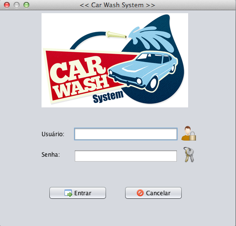
Figura 1 - Tela de Login
Página inicial
Após preencher os campos corretamente, a tela principal do sistema será liberada. De acordo com o tipo do usuário ele terá acesso as funcionalidades respectivas com a sua função no lava-rápido. Essa tela é composta por uma barra de menu, onde se encontram todas as funcionalidades do sistema e uma barra de atalhos que possui apenas algumas das funcionalidades mais utilizadas. 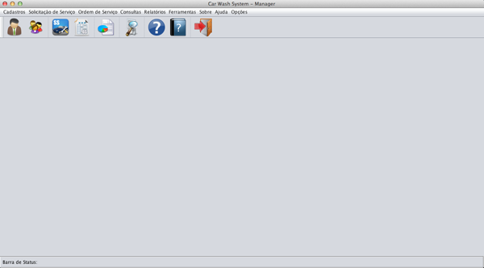Figura 2 - Tela principal do sistema
Essa tela oferece duas opções para sair, a opção de sair do sistema, onde o mesmo será finalizado. E a opção de fazer logout, onde é encerrada a sessão com um usuário para que outro usuário possa acessar. Se o usuário selecionar logou, será mosrada a tela de login e se for a opção para sair, ele deve confirmar se deseja realmente sair.
Figura 3 - Mensagem para sair
Cadastro de clientes
Este menu diz respeito ao cadastro de clientes. Ao acessá-lo uma tela de cadastro aparecerá como mostra a figura: Nessa tela o usuário irá dispor de quatro opções para gerenciar o cadastro de clientes. O campo código estará habilitado para o usuário informar um código e clicando no botão de pesquisa será retorna os dados do cliente correspondente a esse código. Ou ainda, se assim preferir, clicando diretamente no botão de pesquisa, sem preencher o campo código, será aberta uma tela de pesquisa de cadastro de cliente como mostra a figura 4: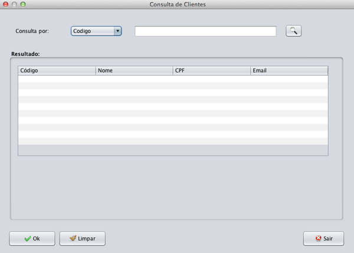
Figura 4 - Tela de Consulta de Cliente
Nesta tela o usuário deverá informar os dados necessarios para cadastrar os dados pessoais do cliente.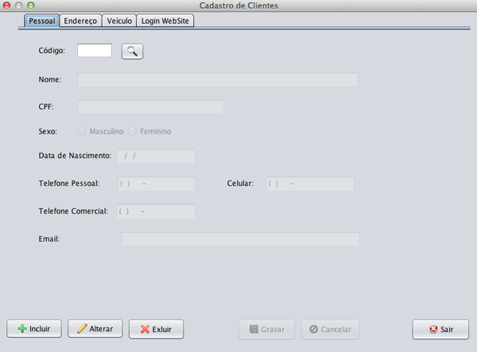
Figura 5 - Tela de cadastro dos dados pessoais do Cliente
Nesta tela o usuário deverá informar os dados necessarios para cadastrar um endereço.E caso a cidade não estiver cadastrada ele deverá cadastra-la antes de realizar o cadastro. Essa regra vale para todos os outros cadastros que possuem cidade.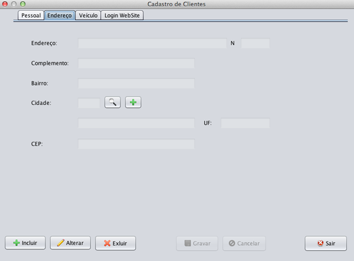
Figura 6 - Tela de cadastro do endereço do Cliente
Nesta tela o usuário deverá informar os dados necessarios para cadastrar um ou mais veículos para esse cliente.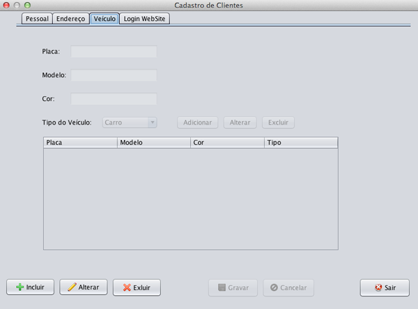
Figura 7 - Tela de cadastro dos veículos do Cliente
Nesta tela o usuário deverá informar os dados necessarios para cadastrar um usuário e senha para o cliente ter acesso a um sistema web.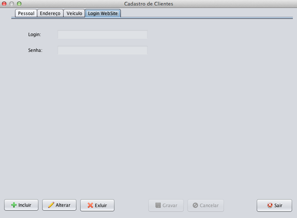
Figura 8 - Tela de cadastro do usuário e senha do Cliente
Cadastro de funcionários
Este menu diz respeito ao gerenciamento do cadastrado de funcionários da empresa. Ao clicar neste menu o usuário terá acesso a tela de cadastrado(como mostra a figura 9), nesta tela o usuário poderá incluir um novo cadastro de funcionário, alterar, consultar ou excluir. Existem três abas nesta tela uma para o cadastrado do funcionário, outra para o seu endereço, e outra para usuário e senha.
Figura 9 - Tela de cadastro de Funcionário
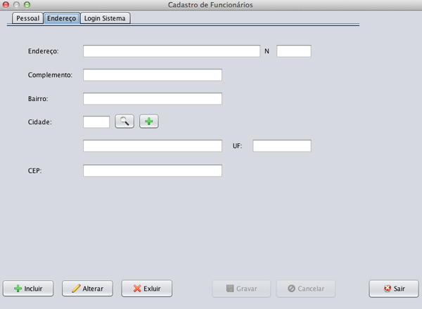Figura 9 - Tela de cadastro de endereço do Funcionário
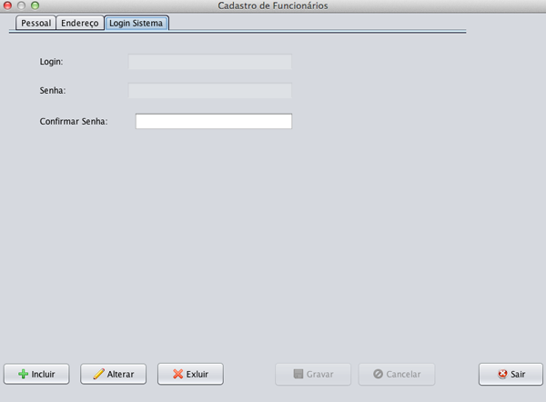Figura 9 - Tela de cadastro do usuário Funcionário
Cadastro de Tipo de Serviço
Este menu diz respeito ao cadastro dos tipos de serviços prestados pela empresa. Ao clicar neste menu o usuário terá acesso a tela de cadastrado(como mostra a figura 10), nesta tela o usuário poderá incluir um novo cadastro de tipo de serviço, alterar, consultar ou excluir. Deve preencher todos os campos.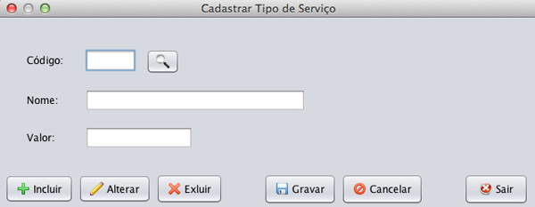
Figura 10 - Tela de cadastro dos Tipo de Serviço
Cadastro de cidades
Neste menu o usuário poderá cadastrar uma cidade que não esteja na base de dados do sistema, ao clicar no mesmo será apresentada uma tela para efetuar esse cadastro, na figura 11 temos uma ilustração da referida tela.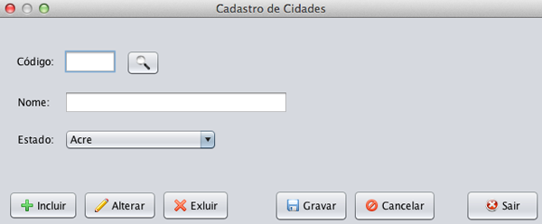
Figura 11 - Tela de cadastro de Cidade
Incluir Solicitação de Serviço
Nesta tela será possivel realizar incluir uma nova solicitação de serviço, onde deverá ser informado alguns dados muito importantes para o gerenciamento das ordens, que é o cliente, o veículo do mesmo e mais o tipo de serviço desejado. A o status da solicitação será preenchida automaticamente quando incluir uma nova.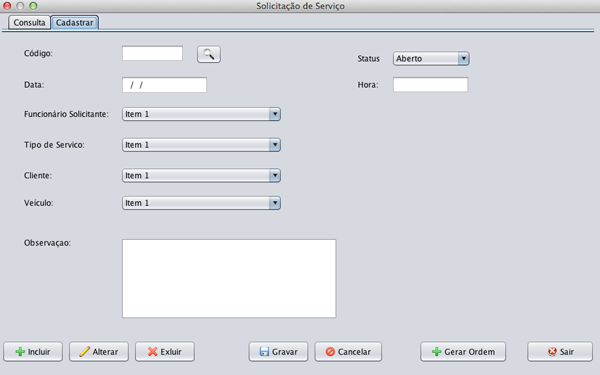
Figura 12 - Tela de cadastro de Solicitação de Serviço
Consultar Solicitação de Serviço
Acessando a barra de menus e clicando em venda o usuário terá acesso aos submenus: registrar venda e histórico de vendas. Ao acessar registar venda o sistema retornará a tela para que tal operação seja realizada, a figura 13. 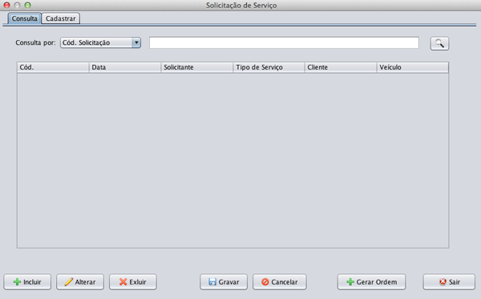Figura 13 - Tela de consulta de Solicitação de Serviço
Gerar Ordem de Serviço
Nesta tela poderá ser obtido o histórico do cliente. O usuário deverá informar o código, nome ou cpf
do cliente e clicar no botão de pesquisa. Na tabela abaixo será mostrado todas as compras do cliente e
também todos os receptivos itens de compras.
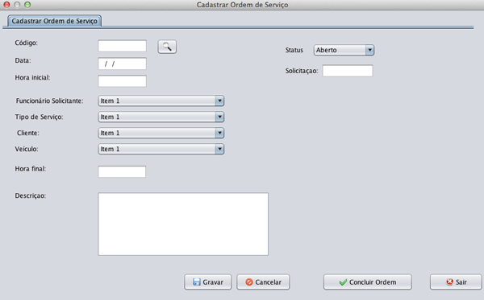
Figura 14 - Tela de gerar Ordem de Serviço
Gerenciar Ordem de Serviço
Nesta opção o usuário poderá cadastrar uma compra efetuada pela empresa. O campo "fornecedor" deverá ser preenchido e também deverá ser informado a forma de pagamento.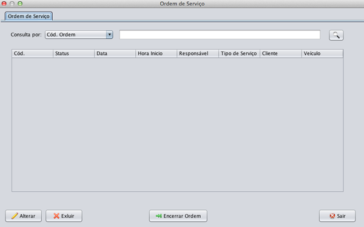
Figura 15 - Tela de registro de compra
Consultas
As telas abaixo são as mesmas telas de consulta que se encontra ns cadastros. Para utilizá-las basta selecionar um meio de pesquisa e digitar o que deseja buscar.Figura 20 - Tela de consulta de Fornecedores
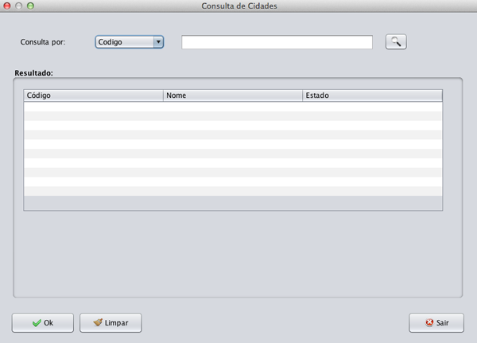Figura 21 - Tela de consulta de Funcionarios
Figura 22 - Tela de consulta de Cidades
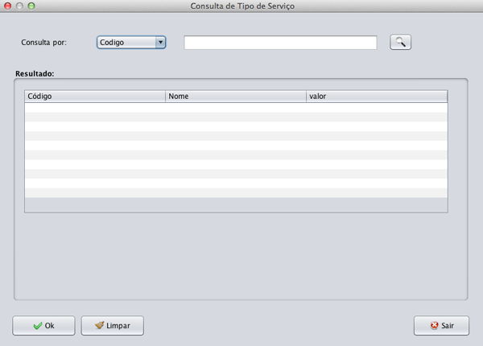
Figura 23 - Tela de consulta de produtos
Gerenciador de relatórios
Este menu normalmente vai estar disponível apenas para o gerente ou administrador. De maneira simples o usuário irá selecionar um tipo de relatório e escolher uma data de inicio e uma de fim. Então será gerado o relatório em .pdf. 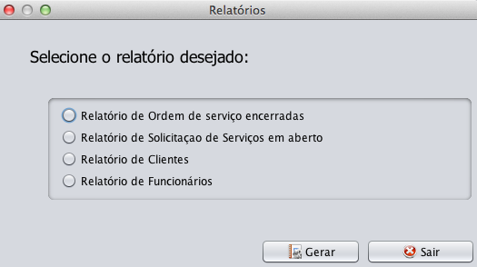Figura 24 - Tela de geração de Relatórios
Configuração do banco de dados
Para que o sistema funcione corretamente é necessário que seja configurado o banco a ser usado. Para isso é fornecida uma interface, onde o administrador do sistema terá de configurar os parâmetros necessários.
Figura 25 - Tela de configuração do Banco de Dados
Caso o banco não esteje funcionando corretamente, o administrador poderá recriar o banco de dados e será exibida a seguinte mensagem exigindo uma confirmação para que o banco possa ser recriado.
Figura 26 - Tela de recriar Banco de Dados
Após a confirmação é exibida uma mensagem informando o sucesso da operação.
Figura 27 - Mensagem exibida ao recriar o Banco
Essa é uma tarefa que somente o adminitrador terá acesso, para que o usuário não apague os dados sem querer. Após a confirmação é exibida uma mensagem informando o sucesso da operação.Informações sobre o sistema
Essa tela serve somente para exibir os desenvolvedores e algumas informações básicas do sistema.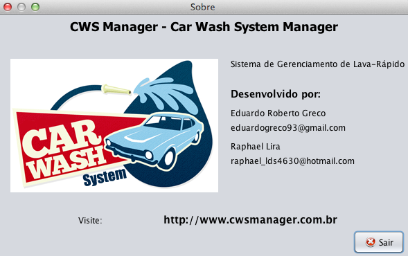
Figura 28 - Tela de informações do sistema